A study app for college students that shows which friends are studying on a campus map, so you can join them.
Students study in libraries because it is easier to start around other people. Study apps leave those people out.
Each student gets a private timer and a streak. Friends nearby are invisible.
Company means agreeing on a time and place first, usually over text.
I talked to over 40 classmates about where and with whom they study, then checked it against published research.
Classmates chose a library or café for who would be there, and found joining a session already running easier than planning one. Online, “study with me” videos drew over 520 million YouTube views in 2023.
In spring 2025, 48.5% of undergraduates screened positive for loneliness. Another national survey puts it at 52%.
ACHA's National College Health Assessment, spring 2025: 47,194 undergraduates at 96 schools.
In a course that matched students into study groups, finding a time was the obstacle reported most, even after matching for availability. Almost a third found studying with strangers awkward.
Kohli et al., SIGCSE 2023: 477 students in one remote course, fall 2020.
People remembered more with someone in the room than alone, and no more on a video call. So the app is for joining friends in person.
Sarasso et al., Scientific Reports 2022: memory accuracy, 18 people in all three conditions.
Students want company, and arranging it is the hard part. The app should show which friends are studying now and let anyone join them in person.
Sources: ACHA-NCHA III, spring 2025, undergraduates; UCLA on the Healthy Minds Study, October 2025; Kohli et al., SIGCSE 2023; Sarasso et al., Scientific Reports 2022; YouTube, February 2024. Classmate conversations were informal. The loneliness figures are self-reported; the study-group and co-presence studies are single studies.
A better timer would still leave each student alone.
From
"How might an app help a student focus alone?"
To
"How might students see which friends are studying now, and join them?"
Mapping the app as one flow showed a gap: what a session looks like to friends outside it.

The app stays open beside someone studying, so nothing on it should pull at their attention.
Pale blue, warm white, slate and near-black. A brand colour would compete with friends on the map.
Frosted glass and iOS controls. The panels keep the map visible underneath.
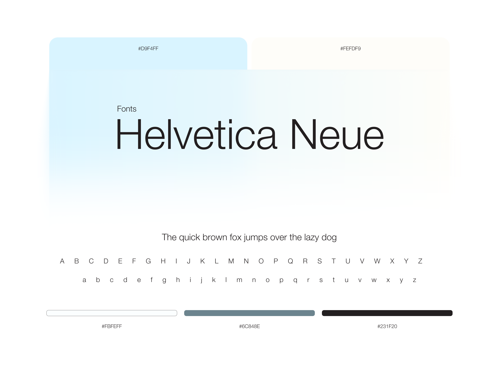
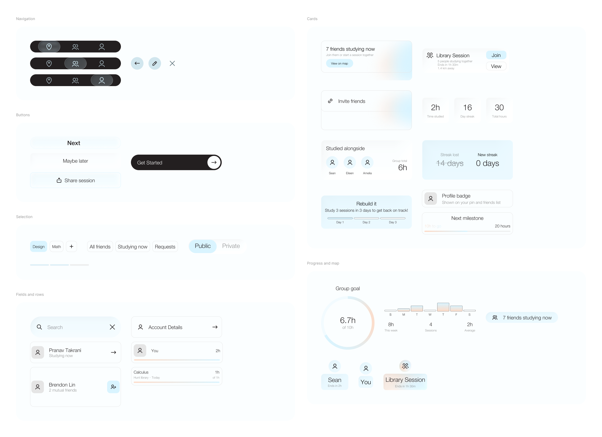
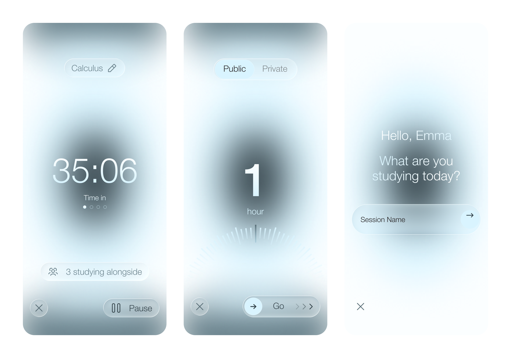
Each phone is the working prototype, looping one step.
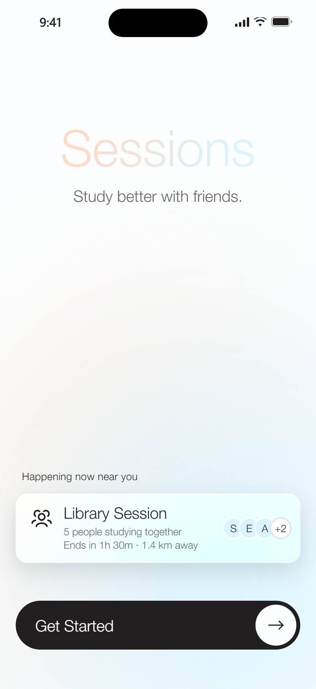
Setup asks your name and how you study, then suggests friends to add: sessions only work with people you know.
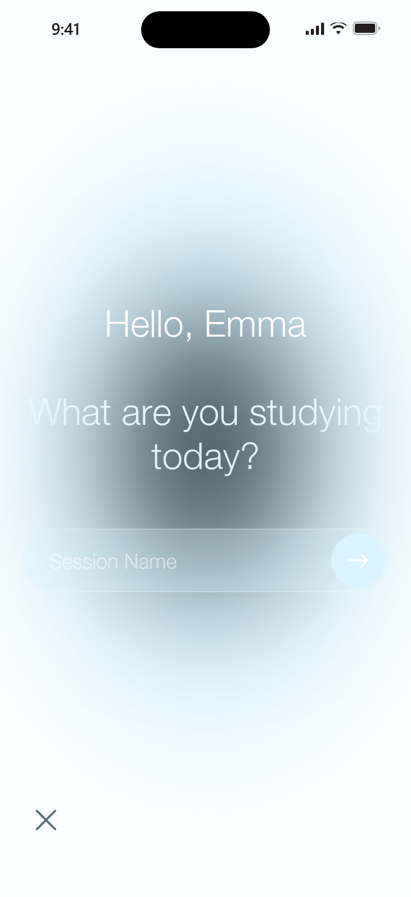
Name it, choose Public or Private, and set a length. Go is a slide, so a session never starts by accident.
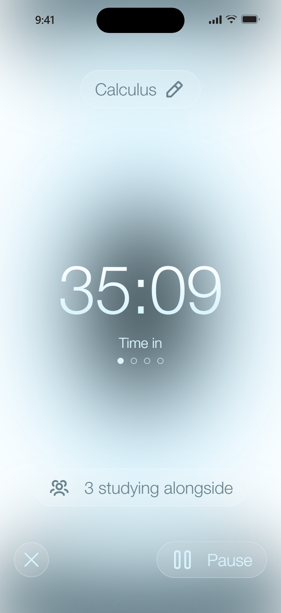
Tap the time to see time left. The dots fill as each quarter of the session passes.
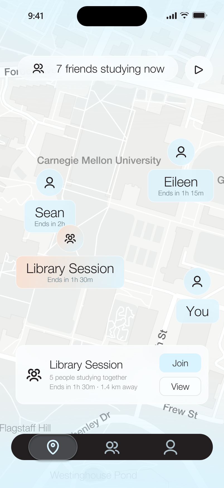
Joining asks once, and says what it shares: your building, to friends, until you leave.
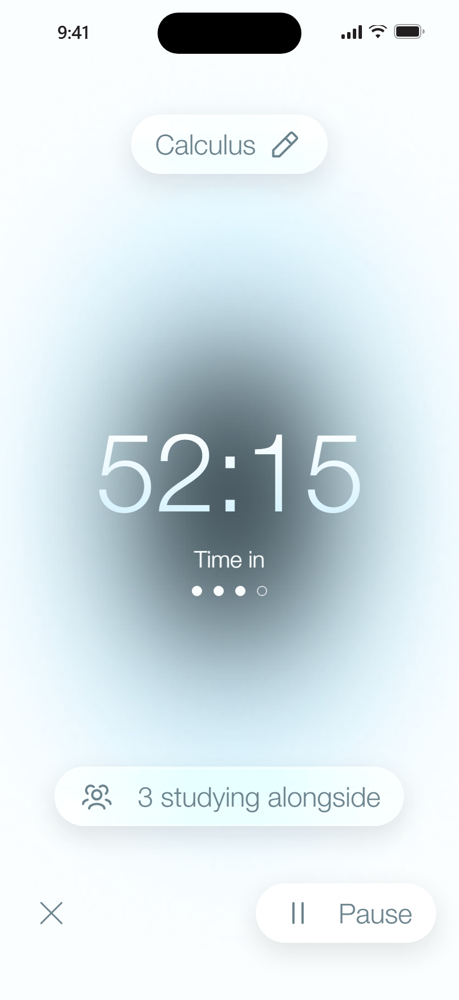
Ending early asks once, and says the time still counts.
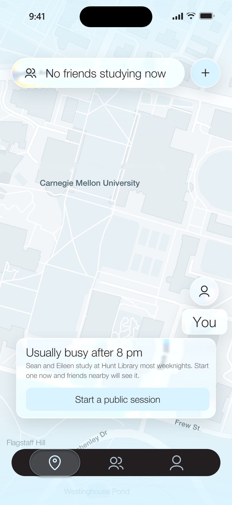
The map says so, shows when friends usually study, and offers a public session they will see.
The screens around a session. Who sees you is new: the Figma flow never said who could see a pin.
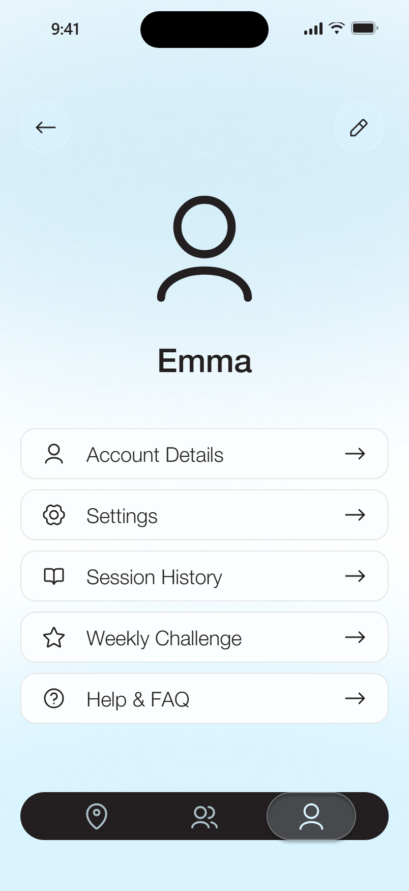
Friends, close friends or only you, and whether a pin shows the building or your seat. Pins show only during a public session.
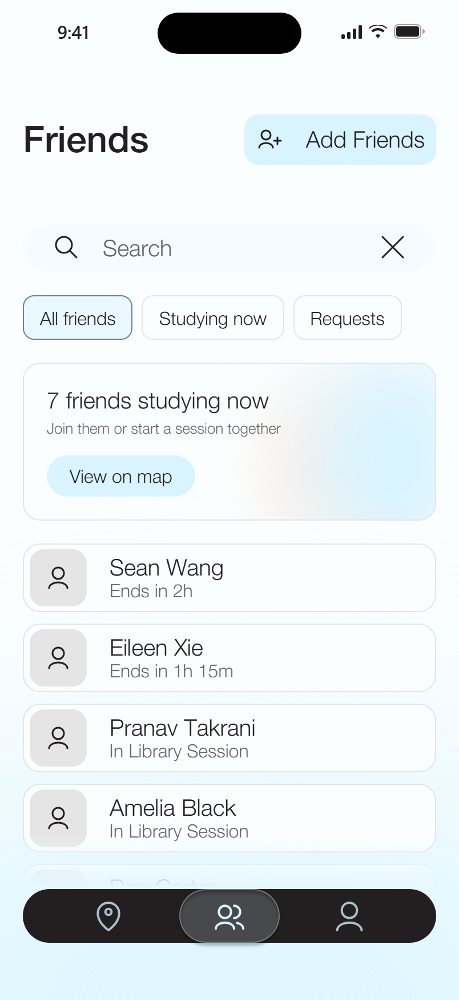
Filter to who is studying now. Add friends by search, invite link or mutual friends.
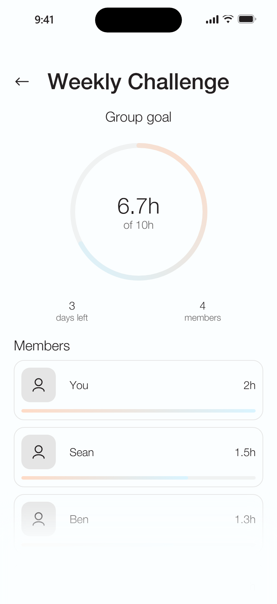
A group shares one goal for the week, and sees what each member has added.
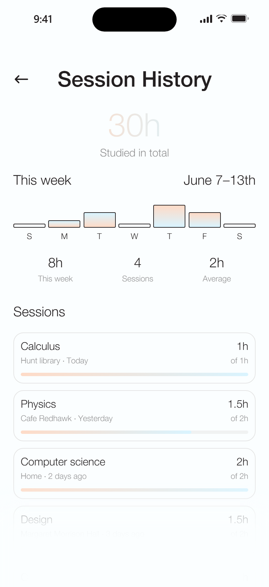
Every past session, with its subject, place and length.
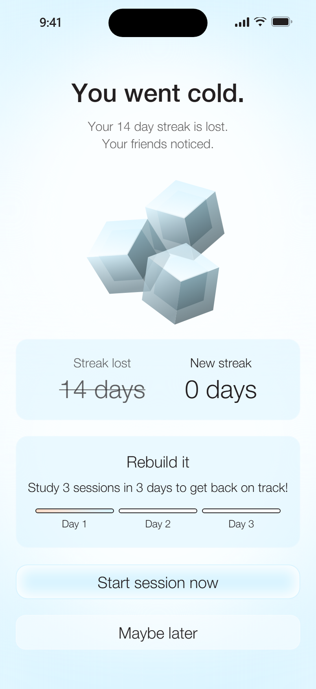
Missing a day ends the streak; three sessions in three days rebuild it. A broken streak puts people off less when it can be repaired.
Sources: Silverman and Barasch, Journal of Consumer Research 2023, on broken and repaired streaks.
Two questions are still open.
The break screen says friends noticed. Whether that brings people back or puts them off is untested.
Students can show only the building, or nothing. Whether that is enough to keep sharing on is untested.